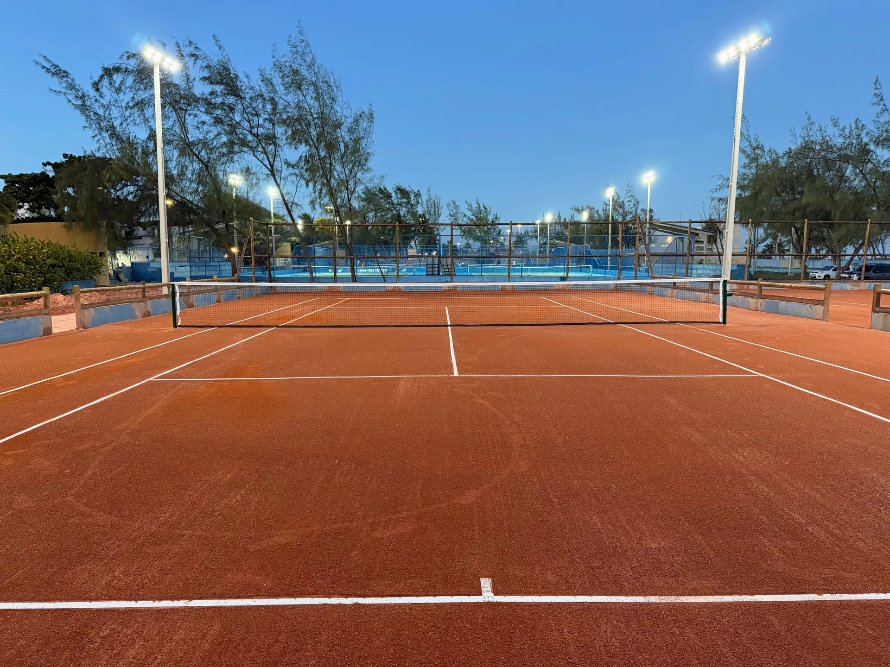
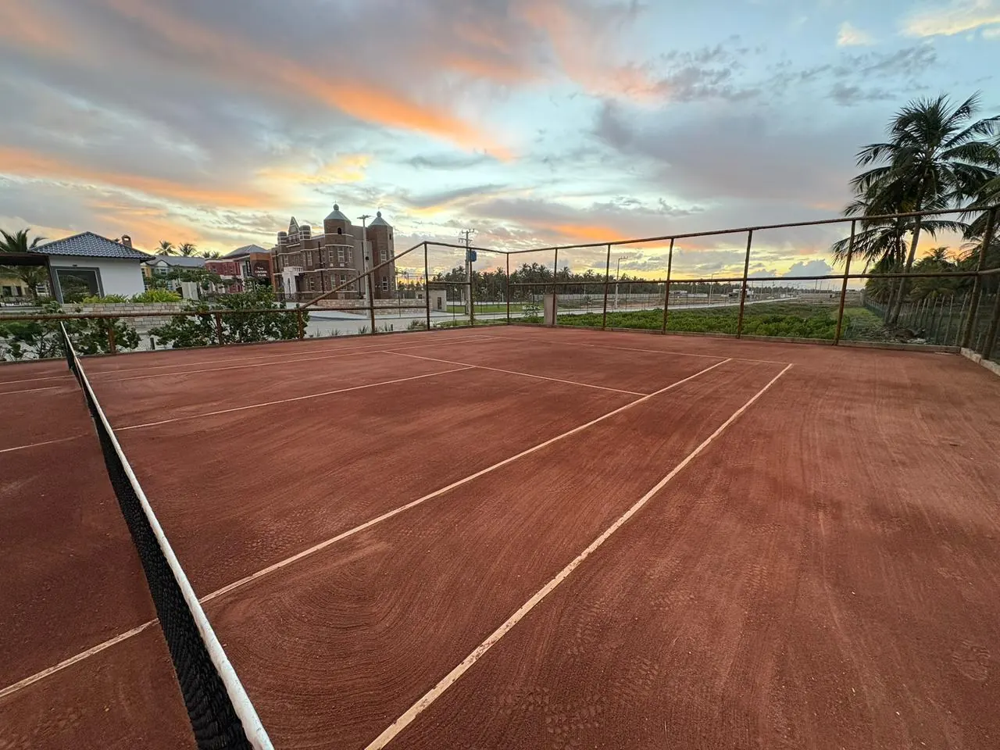
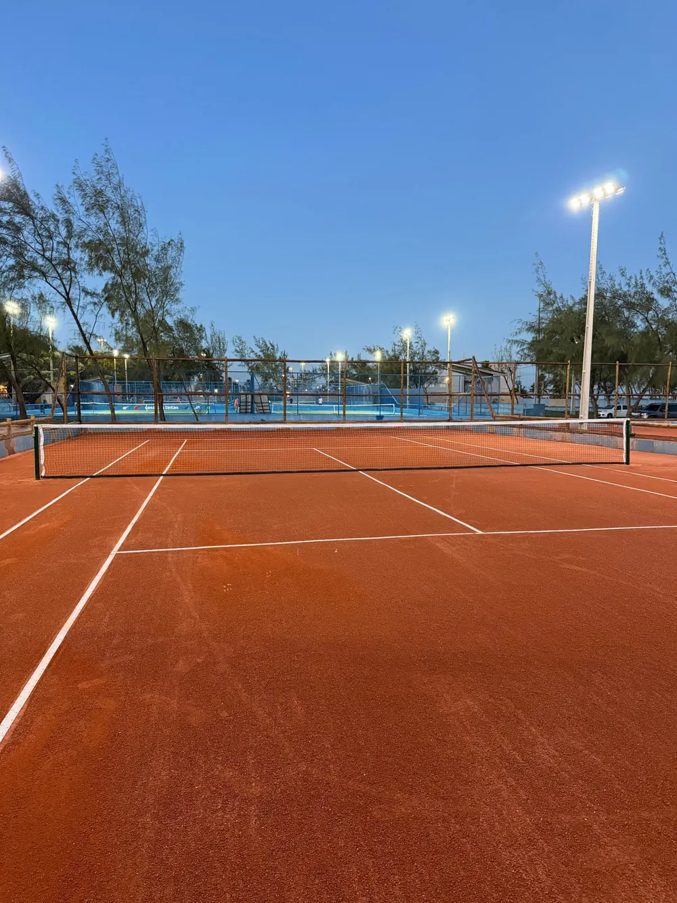
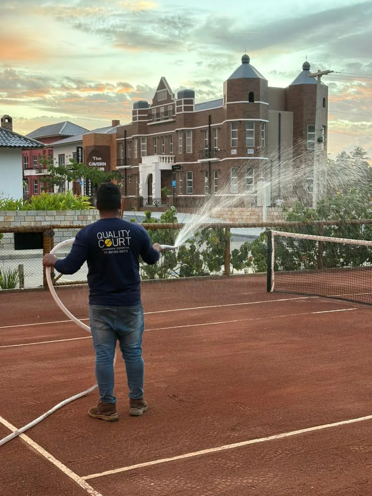
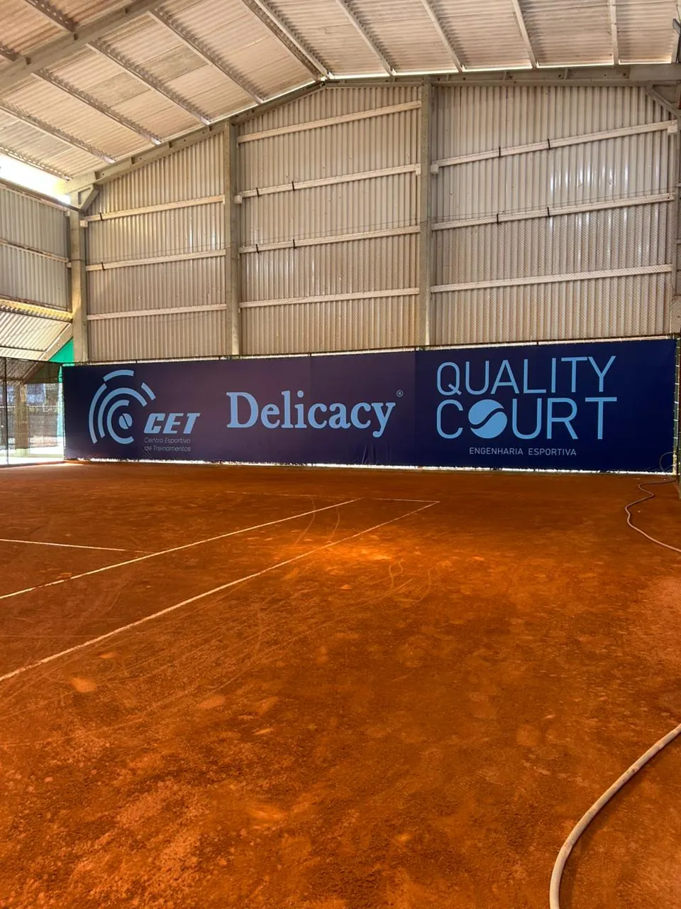

Soluções completas em engenharia esportiva
Construção, reforma e manutenção de quadras de tênis com padrão profissional. Um só parceiro, do terreno à primeira bola em jogo.


01Construção de quadras de tênis
Projeto e execução de quadras profissionais. Cuidamos de todas as etapas, do estudo do terreno à quadra pronta para jogo.
- Diagnóstico técnico do terreno e do escoamento de água
- Projeto da quadra, com orientação e dimensões oficiais
- Preparação da base, nivelamento e drenagem
- Execução da superfície em camadas
- Marcação de linhas, instalação de rede e posts

02Reforma de quadras
Revitalização completa para recuperar performance e estética. Avaliamos a quadra, identificamos a causa dos problemas e corrigimos desde a base.
Sinais de que a sua quadra precisa de reforma
- Poças d’água depois da chuva
- Quique irregular da bola
- Piso solto, afundado ou com buracos
- Linhas soltas ou desalinhadas
- Superfície desgastada e sem cor

03Manutenção especializada
Serviços periódicos para manter a quadra em perfeitas condições. A frequência é definida com você, de acordo com o uso da quadra.
- Reposição de saibro e pó cerâmico
- Nivelamento, rega e compactação da superfície
- Revisão e fixação das linhas
- Verificação de rede, posts e drenagem
Método Quality Court
Seis etapas, sempre na mesma ordem. Cada uma só começa quando a anterior foi conferida.
- 01
Diagnóstico técnico do espaço
Visita, levantamento do terreno, do solo e do escoamento de água.
- 02
Planejamento da quadra
Projeto, orientação, materiais e cronograma.
- 03
Preparação da base
Nivelamento, compactação e drenagem.
- 04
Execução da engenharia esportiva
Camadas da superfície aplicadas com controle técnico.
- 05
Acabamento profissional
Marcação de linhas, rede, posts e ajustes finos.
- 06
Entrega pronta para jogo
Quadra conferida e orientações de conservação.
Também vendemos o que a quadra precisa
Qual é o próximo passo da sua quadra?
Conte o que você precisa e agende uma avaliação técnica com a nossa equipe.
